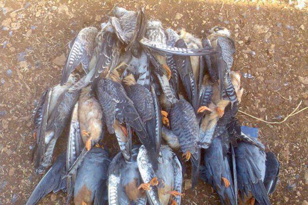

While conservation science invests heavily in bird protection elsewhere, ignorance at home still kills protected raptors that are neither game nor food. This bird is the Red-footed Falcon (Falco vespertinus) — not the Common Kestrel.

While the West undertakes painstaking studies, intensive workshops, long hours of monitoring, and heavy spending to preserve natural balance through bird conservation and sustainable living, the ignorant among us — whose minds have never been touched by the light of knowledge — kill any bird without knowing its role or ecological importance. They disregard every law, faith, and ethic, expressing sick psychologies that have not risen to the level of humanity but sink to brutal assault on God’s creatures…
These killed birds are not hunting quarry and are not eaten. This is a falcon known locally as lazeeq or red uwaisaq; its scientific name is Falco vespertinus, in English the Red-footed Falcon. It is a falcon belonging to the falcon family Falconidae.